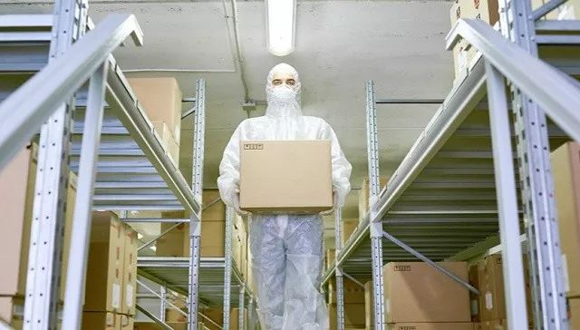

清流|疫情之下被点燃的防治概念股
原文链接 备份链接 ▼ 作者|翟耀媛 新冠疫情治疗药物尚未明确之下，A股在2月3日新春开市以来，一大批疫情概念股搭上“便车”，跨界经营。其中口罩、消毒剂、医疗器械等概念股集体迎来小高潮，相关个股市值大増。 而在经历数日涨停后，疫情概念股近 …
来源：图虫
记者：卢奕贝 编辑：牙韩翔
“
疫情影响之下全球防护设备，尤其是口罩供不应求。这让所有口罩生产商的工厂都开始忙碌起来。
”
一家名为Kolmi Hopen的公司突然收到了一大笔订单——5亿个口罩。
这家位于法国昂格尔（Angers）的工厂，通常每年生产约1.7亿个口罩，但从上周开始，这家公司平均每两分钟就收到一笔订单。
由于其原材料供应商位于法国和附近的欧洲国家，他们得以迅速提高产量。但该公司在暴增需求之下，仍需要延长工作时间、雇佣更多工人，来保证机器的24小时生产。
新型冠状病毒疫情席卷全球。截止2020年2月13日，中国现存确诊人数高达52368人。为了防止病毒传播，各地有关部门已经要求居民时必须佩戴口罩。而从疫情爆发以来，口罩的需求仍然无法得到满足。
中国工信部曾指出，中国是世界最大的口罩生产和出口国，年产量占全球约50%。但在这次的疫情的影响下，中国也需要向全球厂商求购口罩，以补充缺口。一方面因为需求激增，另一方面许多工厂因为春节和疫情限制无法正常开工。
这让全球的口罩生产商的工厂都开始忙碌起来。
2月12日，中国海关总署发布数据显示，1月24日至2月11日，全国海关共验放进口疫情防控物资8.7亿件，价值28.4亿元。其中，口罩7.3亿只。
“该公司已利用全球资源，在世界范围内加大口罩生产产量，并有对中国进口医用口罩。”3M公司公关负责人对界面新闻表示。这家公司所销售的N95型口罩因为具有较高的防护性，在这次疫情之中需求激增。除中国外，3M位于其他亚洲国家以及欧洲、美国的工厂已经被调动来增加生产。
在日本，口罩厂商尤妮佳的工厂已经1个月没有停息。这家公司收到了比平时多10倍的口罩订单。另一公司王子 Nepia 虽然增加了日本工厂的员工人数，以应对订单需求，却也同样被订单数量追着跑。
日本卫生材料工业联合会曾表示，由1月16日日本出现首宗国内确诊个案起，2星期内已出货10亿个口罩。根据日本经济产业省说法，日本厂商在本国销售的口罩当中，中国生产的占总量的7成，日本自己生产的只占3成。
在日本政府的要求下，日本各家厂商虽然 24 小时不眠不休的赶工生产，却也同样无法应付爆量的需求。
甚至主营业务并非口罩的公司，也加入生产大军之中。
捷克共和国的Pardam是一家主要生产纳米纤维的公司，这种纤维可以捕捉微小颗粒。此前因没什么订单，公司几乎放弃了去年测试过的一款卫生口罩。但在新冠肺炎疫情爆发后，公司库存的2000个口罩在两天内售罄，并将转向自动化以增加产量。
除了供给中国市场庞大的需求之外，世界各国的口罩厂商拼命增加产量的背后，是他们自己口罩也不够用了。
据美国《新闻周刊》（Newsweek）1月28日报道，包括洛杉矶、芝加哥和多伦多在内的北美主要城市都出现了口罩供不应求的情况。另外，在欧洲、日本、阿联酋等国家和地区，许多药店和商场的口罩也已经销售一空。
WHO(世界卫生组织)曾指出，全球正面临着个人防护用品市场的严重破坏，需求量是正常水平的100倍，价格则是正常水平的20倍。
口罩短缺下，不少国家已经开始限购。日本自1月份出现肺炎确诊病例开始，许多药妆店在库存频频售罄的情况下，开始限制个人顾客购买的口罩数量，一般为每人限购2或3盒。韩国自2月6日起，总额超过200万韩元或数量超过1000个时，需进行正式出口申报。
随着国内工厂逐渐复工，口罩供应将逐步好转。2月5日，在国务院联防联控机制新闻发布会上，国家发展改革委社会发展司副司长郝福庆介绍，截至2月3日，全国22个重点省份口罩产量已经达到1480.6万只，比前一日环比增长3.1%，产能利用率达到了67%，环比提高2个百分点。
但已经卷入这场口罩生产浪潮的外国公司仍然没有打算停下。
“需求仍然在上升，我们还正在尽可能地以最快的速度生产口罩。”Kolmi Hopen母公司Medicom首席运营官Guillaume Laverdure说。

原文链接 备份链接 ▼ 作者|翟耀媛 新冠疫情治疗药物尚未明确之下，A股在2月3日新春开市以来，一大批疫情概念股搭上“便车”，跨界经营。其中口罩、消毒剂、医疗器械等概念股集体迎来小高潮，相关个股市值大増。 而在经历数日涨停后，疫情概念股近 …
原文链接 备份链接 疫情防控“全国一盘棋”的关键时刻，各地政府应该在用工、原材料、物流等环节最大程度地给口罩企业提供支持，绝对不能画地为牢。 2月11日，工作人员在位于重庆市南岸区的宏冠医疗设备有限公司口罩生产包装车间内作业。作者：王全 …
原文链接 备份链接 我想说，我们再困难也会响应政府号召，去打赢这场新冠肺炎病毒阻击战！ 口述 | 李安定 整理 | 金 姬 我是70后上海人，生于斯长于斯。大学毕业之后的十几年间，我主要从事机电设计顾问方面的工作，在美资、港资和内地几家大 …
原文链接 备份链接 文/何星莹 编辑/单一 疫情吸引了绝大部分视线，但在公众关注之外，余波还在继续。 受疫情影响，消费者纷纷取消春节期间的出行和聚餐计划，旅游业和餐饮业首当其冲，不少从业者苦中作乐调侃自己“暂时被官宣失业”。 年前囤积的物 …
原文链接 备份链接 _ 随着2月10日全国陆续复工，需要在需求和供给端采取必要调控手段，避免发生更严重的口罩紧缺问题 _ 文 | 笪兴 董博琳 许加凤 为了缓解武汉及整个湖北的医疗物资短缺，各级政府、慈善机构和爱心人士正努力从全中国甚至全 …